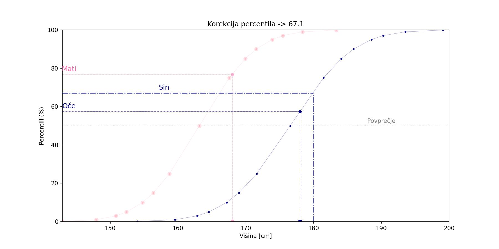
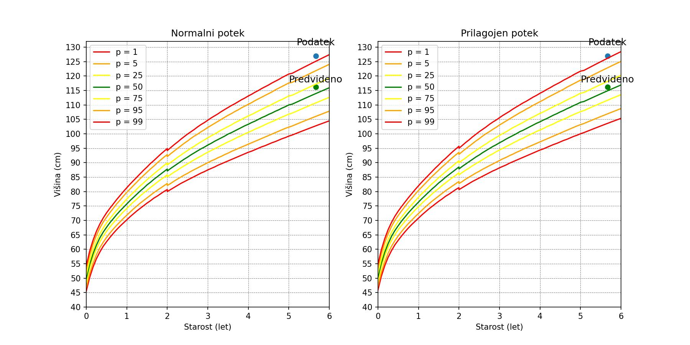
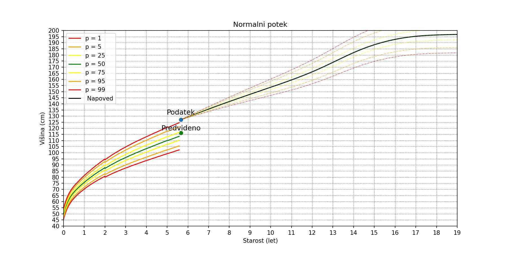

Oče: 178 cm
Mati: 168 cm
Starost: 68 mesecev
Starost: 5.7 letih
Višina: 127 cm
Spol: M

Višina matere ustreza 76.8 percenilu. Višina očeta ustreza 57.4 percenilu. Ob upoštevanju velikosti staršev, je srednja percentilna krivulja 67.1. Če bi otrok sledil percentilni krivulji, bi pričakocali, da bi dosegel višino v odrasli dobi 179.9 cm.
Graf na levi prikazuje normalni potek razvijanja višine ob upoštevanju različnih percentilnih skupin. Druga točka pa prikazuje dejansko višino otroka. S tem lahko ocenimo v kateri percentilni skupini je otrok glede na vso populacijo. Graf na desni pa prikazuje prilagojene percentilne krivulje, ki upoštevajo višino otroka. V kolikor pride glede na normalni razvoj do odstopanj, lahko ta odstopanje še analiziramo z vidika višine staršev.## Specične karakteristike otroka
Povprečen otrok starosti 5.7 let je visok 113.9 cm. Višina otroka je 127 cm, kar ustreza 99.5 percentilu. Ob upoštevanju, da je mid-parental centile 67.1, je pričakovana velikost otroka 116.2 cm. Ralika med dejansko velikostjo in pričakovano je 10.8 cm oziroma 9.3% od pričakovane višine.

V kolikor bo otrok nadaljeval z rastjo v isti percentilni skupini, se bo njegova višina z leti spreminjala kot to prikazuje spodnja slika. Iz napovedi pa je razvidno, da bi lahko otrok, dosegel končno višino 196.8 cm.

Vir: